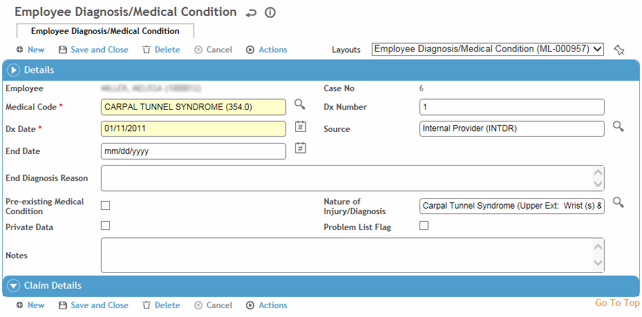

An employee’s medical conditions can be recorded in the Demographics, Medical Chart, Clinic Visits, or Case Management modules. The Dx tab in each of these modules displays all of the employee’s diagnoses regardless of where they were entered.
On the Dx tab, click a link to edit an existing diagnosis, or click New.

Select the Diagnosis. The Dx Date defaults to the treatment date, but you can change this if necessary.
The first diagnosis you enter is considered the primary diagnosis, and the Diagnosis No field will have the number 1. Each subsequent diagnosis you enter is automatically numbered sequentially. If you later change the number of a diagnosis, all other entries will be renumbered accordingly.
In the Source field, select the person or health professional who provided the diagnosis (e.g. external physician, internal physician, patient).
If the diagnosis is no longer in effect, enter the End Date and End Diagnosis Reason so that you can maintain a history of diagnosis changes. eRx interaction checking will no longer factor in this diagnosis.
Indicate if this diagnosis is a Pre-existing Medical Condition. These can be filtered in all Dx lists in Cority.
For diagnoses entered in the Clinic Visits or Case Management modules:
Select the Nature of Injury/Body Part/Side and enter any notes about this diagnosis.
Indicate if you want the diagnosis to appear in the Problem List (see Working with the Problem List), and if the data is private (private data can be included or excluded in reports where indicated).
In the Claim Details section, indicate if the diagnosis is related to a Workers’ Compensation case, and select the Status and Date.
If your company has licensed and installed the Work Loss Data Institute’s Official Disability Guidelines (ODG) product, and the link has been defined in the system settings, you can view the guidelines for a diagnosis. In the Dx list, select the checkbox beside a diagnosis, then choose Actions»Open ODG (for diagnoses entered in the Clinic Visits or Case Management modules, this action is also available in the diagnoses form).
Click Save.